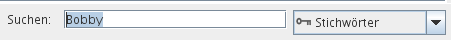

Sie können schnell suchen nach Bildern: Geben Sie Text ein ins Eingabefeld unten im Programmfenster. Sie gelangen dort hin durch Mausklick, über das Menü Gehe zu oder mit der Tastenkombination Strg+F.
Gesucht wird (erst), nachdem Sie die Enter/Return-Taste betätigen, während das Such-Eingabefeld ausgewählt ist. Das gilt auch, änderten Sie, wo gesucht werden soll über das Dropdown-Listenfeld, siehe unten.

Rechts des Eingabelds ist ein Dropdown Listenfeld, das bestimmt, wo gesucht wird:
Im Gegensatz zu anderen Suchen verlangen Suchen mit Strichpunkt
präzise Eingaben. Suchen ohne Strichpunkt finden ein Bild
mit Sandra Bauer, falls Sie nur Sandra
eingeben. Trennen Sie mehrere Begriffe mit Strichpunkt, geben
Sie Sandra Bauer ein, andernfalls werden keine
Bilder gefunden, auf denen Sandra Bauer zu sehen
ist, außer diese haben zusätzlich ein Metadatum, das nur
Sandra heißt.